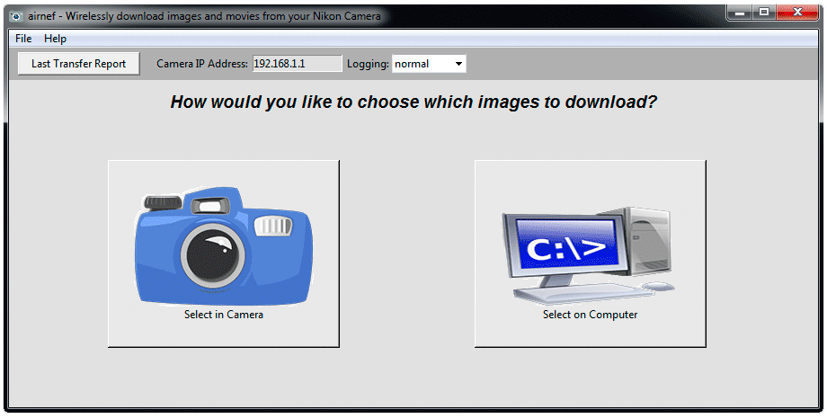

airnef - Wireless download from your Nikon Camera! |
This is the official homepage of Airnef, my open-source utility for downloading images and movies from your WiFi-equipped Nikon camera. Airnef runs on Windows, Mac, and Linux. It supports all Nikon cameras that have built-in WiFi interfaces, along with those using external Nikon WU-1a and WU-1b WiFi adapters. Airnef may also work with Nikon's WT-4A and WT-5A wireless adapters for the D3/D4/D8x, although I don't have any of these adapters on hand to test. Airnef supports Canon cameras as well, although Canon supplies its own excellent EOS Utility for wireless downloads. Airnef is licensed under GPL v3.
Airnef is written in the Python programming language and is distributed in both installable form (Windows and OS X, directory of binaries for Linux) and as a source tree that can execute on any platform supporting Python 2.7.x or 3.4.x.
Dates |
Ver |
Change List |
Windows Installer |
OS X application |
Linux Binary |
Python Source Code |
09/11/2015 |
1.00 |
N/A |
Airnef is two applications - a GUI front-end and a command-line app. The GUI front-end allows you to visually select the criteria of which images to download and then launches the command-line app to perform the transfer. You can optionally use the command-line version directly to script your transfers.
|

Thom Hogan - Finally, Desktop WiFi
DPReview - Airnef brings desktop Wi-Fi transfer to Nikon users
Here are a few post-installation Windows tips that will help make Airnef more convenient to use:
Here are a few post-installation OS X tips that will help make Airnef more convenient to use:
Instead of running the bundled Python environment that ships with the pre-built executables you can also run the source through your existing Python installation. Airnef supports both Python 2.7.x and 3.4.x environments. OS X and most Linux distributions install Python by default. For Linux the Tkinter GUI framework may not come preinstalled; you can install it via "sudo apt-get install python-tk". For Windows you'll need to download and install Python - I suggest enabling the option to add Python to your system path during the installation.
The best resource for learning how to use Airnef is the Youtube tutorial linked at the top of this page.
Airnef provides two basic methods for selecting which images/movies to download - in the camera or on your computer. The benefit of selecting in the camera is that you can visually preview the images(s) first. The downside is that it's more cumbersome to select a large number of images. Also, some models limit the types of files you can select within the camera. For example the D7200 doesn't allow video files to be selected. Consumer-level cameras like the Nikon 1 J4 only let you select JPEGs. Fortunately both raw and video files can be downloaded on all camera models using the computer selection method within Airnef.
Airnef is really two separate applications - a Graphical Interface (airnef) and a Command-Line program (airnefcmd). The graphical interface lets you to visually specify your download options, which are then passed to airnefcmd to perform the actual downloads. You can optionally use the command-line program directly, which enables you to script/automate your downloads. See the Command Line Reference in this page for details.
Airnef maintains a permanent download history of every file you transfer. Airnef uses this history to allow you to automatically skip over files you've already transferred, without having to specifically set a criteria that excludes those files. Airnef's default behavior is to skip files that are in its download history; you can override this behavior by un-checking the "Skip images/movies you've previously downloaded" option in each of the dialogs.
Airnef remembers all the options you specified on your last download along with the last 32 directories you've used. These options are saved every time you start a download operation.
By default your Nikon camera has an IP address of 192.168.1.1 and runs without encryption. You can modify both the IP address and wireless security via a one-time procedure using Nikon's Wireless Mobile Utility app (iOS and Android). Nikon has published instructions on modifying the security settings here. Modifying the IP address of your camera is useful if you run a typical network configuration that has the router at 192.168.1.1, which conflicts with the camera and makes it impossible to use a wired connection to your router/Internet at the same time you'd like to download from the camera. Here are instructions for the one-time procedure to change your cameras IP address:
On Canon cameras the ad hoc wireless the IP address is usually 192.168.1.2. Canon bodies also support wireless infrastructure mode, meaning the camera can use an existing wireless network rather than creating its own ad hoc network. For infrastructure mode Canon lets you specify a static IP address of the camera - use that option and then use the same IP address in Airnef.
When run with no options Airnef's default behavior is to either download every image that has been selected for download by the user on the camera's playback menu or, if no images were selected on the camera, to download every image/movie file it finds on the first populated memory card in the camera located at IP address 192.168.1.1 (Nikon's default IP address), storing the files into the current directory and skipping any files downloaded on previous invocations. Any name collisions with existing files will be resolved by generating unique filenames by adding a -new-x suffix (for example, DSC_1575.nef becomes DSC_1575-new-1.nef, DSC_1575-new-2.nef, etc...). Optional command-line arguments can be added to set the criteria of which files to download, where they should be downloaded, how filename collisions should be resolved, and other general behavior of the application.
--help
Prints a help display listing all the typical options supported
@filename
Load additional arguments from a text file. In addition to any parameter files you specify, airnefcmd will always load a file named 'airnefcmd-defaultopts' in its working directory (if it exists). The parameters from the default file will be loaded first, allowing you to override them with parameters from your own files and those specified on the command line. All parameter files must be formatted so that each parameter word is on a separate line, which is a requirement of Python's argparse routine. For example:
--action getsmallthumbs --extlist NEF JPG
--ipaddress
Specifies the IP address of the camera supporting the MTP-IP interface. For Nikon's ad hoc wireless this is always the default, 192.168.1.1. On Canon the ad hoc wireless address is usually 192.168.1.2. Canon also supports wireless infrastructure mode, where instead of the camera serving as a temporary WiFi access point it can use an existing wireless network - for this mode you can configure the camera to any IP address you'd like.
--action [getfiles | getlargethumbs | listfiles]
What action to perform. The default action 'getfiles' will download the full-sized version of the files. 'getlargethumbs' will download the large thumbnail of each image/video. 'getsmallthumbs' will download the small thumbnail of each image/video. 'listfiles' will generate a directory listing of files on the camera, sorted by the --transferorder option.
--extlist [extension ...]
Specifies which types of files (by extension) to download/list. The default is <ALL>, which will download/list every file found. Multiple extensions can be specified. Example: extlist NEF JPG MOV. In the unlikely case where a camera has downloadable files without extensions, include <noext> in the extlist to download those files as well.
--startdate and --enddate [mm/dd/yy] or [mm/dd/yy hh:mm:ss]
Selects the starting and/or ending creation-date criteria of files to download/list. There are two specifications supported - date-only or date+time. The dates/time is inclusive - any file created on or after startdate will be included; any file created on or before enddate will be included. Examples:
--startdate 05/06/15 (download all files created on or after 05/06/15 00:00:00)
--enddate 09/07/15 (download all files created on or before 09/07/15 23:59:59)
--startdate 05/06/15 --endddate 09/07/15 (download all files created on or after 05/06/15 00:00:00 and before 09/07/15 23:59:59)
--startdate 05/06/15 15:05:10 (download all files created on or after 05/06/15 3:05:10 PM)
--outputdir [directory]
The directory to store the downloaded files. The directory must be preexisting. Put quotes around the directory if it contains spaces. Example: outputdir "c:\My Documents". The default is the current working directory.
--ifexists [uniquename | skip | overwrite | prompt | exit]
Specifies what action to take if a local file exists in the output directory matching a file to be downloaded. The default 'uniquename' will cause a unique filename to be generated by adding -new-x suffix (for example, DSC_1575.nef becomes DSC_1575-new-1.nef, DSC_1575-new-2.nef, etc...). 'skip' will cause the file to be skipped and not downloaded - be careful when using this option without the --camerafolderinoutputdir option, because if the same root filename exists in multiple folders on the camera then this will cause the file in all folders but the first to be skipped. 'overwrite' will overwrite the local file with the downloaded file - the same caution as 'skip' applies regarding the same file in multiple camera directories. 'prompt' will present a choice of actions to take on the console (uniquename/skip/overwrite/prompt/exit). 'exit' will cause the application to terminate whenever an existing file with the same name as a download candidate is found - note that the existence check of a given file is performed just before the download begins.
--downloadhistory [skipfiles | ignore | clear]
Controls how the file download history is handled for this invocation. Airnefcmd maintains a database of all files it has downloaded for a given camera model/serial number combination. Each file in the database is identified by the combination of its name, creation date, and size; these three elements together allow Airnef to guarantee against false positives/negatives of the history. The default 'skipfiles' will skip any file that is in the download history. 'ignore' will cause airnefcmd to ignore the download history for this invocation when deciding whether to download a given file - ie, it will download files even if they're in the download history. Note that the download history will still be updated for any files downloaded during 'ignore' invocations; this allows the history to be utilized on future invocations when 'ignore' is not specified. 'clear' will delete the entire download history for the connected camera model/serial number at the start of execution; the download history will still be updated for any files downloaded during the session.
--onlyfolders [folder ...]
List of folders
on the camera from which to download from. Any downloadable file(s) found that are not in one of the list folders will not be downloaded/listed. Example: onlyfolders 100D7200 101D7200. The default is to download/list from any folder on the camera. In the unlikely case where a camera has downloadable files in the root directory, include <root> in the list to download those files as well.
--excludefolders [folder ...]
List of folders on the camera from which to not download from. Any downloadable file(s) found that are in one of the list folders will not be downloaded/listed. The default is to not exclude any folders. In the unlikely case where a camera has downloadable files in the root directory, include <root> in the list to exclude the the download of those files as well.
--camerafolderinoutputdir [no | yes]
Determines whether downloaded images will be stored locally in a subdirectory named after the camera folder in which the image resides. For example, with an --outputdir of "c:\pics" and --camerafolderinoutputdir yes, any files found in a camera folder named 100D7200 will be stored locally to c:\pics\100D7200. The default is not recreate the camera folder in the output directory for downloaded images.
--transferorder [oldestfirst | newestfirst]
Controls the order of which files are downloaded/list, based on their creation dates. When 'oldestfirst' is specified the oldest file on the camera will be downloaded/listed first, then the next oldest, etc... When 'newestfirst' is specified the newest file on the camera will be downloaded first, then the next newest, etc...
--slot [firstfound | first | second]
Determines which media slot/card on the camera will be selected to download/list files from. The default 'firstfound', which will select the first slot found populated with a media card. 'first' or 'second' will select the first or second slot respectively.
--cameratransferlist [useifavail | exitifnotavail | ignore]
Controls how to manage a potential camera transfer list, which is the list created by the camera when the user selects image(s) to download on the camera's playback menu. When airnefcmd runs it interrogates the camera to see if a transfer list exists; the cameratransferlist controls how airnefcmd is to respond to the existence or non-existence of this list. When 'useifavail' is specified airnefcmd will only download images within the transfer list, and will ignore all other selection criteria specified by the other command line options. The download history will still be utilized however, meaning any images previously downloaded will be ignored, depending on the setting of the downloadhistory option. When 'exitifnotavail' is specified airnefcmd will terminate if the camera's transfer list is empty (ie, there are no user-selected images for download). When 'ignore' is specified airnefcmd will ignore any potential transfer list on the camera and will instead download/list all images on the camera based on the criteria specified with the other command line options.
--logginglevel [normal | verbose | debug]
The verbosity level of logging for an airnefcmd session. Airnef outputs its messages both to the console (stdout/stderr) and to a pair of logging files, named airnefcmd-log-last.txt (log messages from most recent session) and airnefcmd-log-lifetime.txt (log messages from all sessions). 'normal' indicates that only important/useful informational messages will be logged. These include messages such as the connected model/serial number of the camera and information about each file downloaded/listed. 'verbose' includes some additional messages, useful for instance when you'd like more information about why a particular file was not downloaded. 'debug' will include all developer-level messages and debug information, including hex dumps of all MTP-IP communication between the airnefcmd and the camera. The default logging level is 'normal'.
The following is a list of less common arguments that can be used when troubleshooting or debugging the operation of airnefcmd. These options are hidden from the --help display, to limit the clutter of options presented for normal use.
--connecttimeout <seconds>
The amount of time to wait for a TCP/IP socket connection to be established with the camera. The default is 10 seconds. When Nikon's ad hoc wireless network is ready the camera usually connects very quickly. However it may take a little longer if the user just enabled the WiFi option on the camera and/or just selected the network on his computer. Canon bodies usually take a bit longer to establish a connection, esp if its WiFi has been idle for some period of time.
--socketreadwritetimeout <seconds>
The amount of time to wait for a single TCP/IP socket read/write request to complete. The default is 5 seconds.
--retrycount <number>
The number of full-cycle retries airnefcmd will perform before completing its configured action on all files. By "full-cycle" I mean the process of recovering from a failed transaction, which includes restarting the full MTP-IP session. The default is unlimited.
--retrydelaysecs <number>
The number of seconds to pause between full-cycle retries. The default is 5 seconds. This value was chosen to allow some measure of time for the camera to reestablish its ad hoc wireless network; typically the camera will require a few retry cycles before it is ready for a new MTP-IP session after a failed attempt.
--printstackframes [no | yes]
Print stack frames for all exceptions. The default is to only print stack frames for programming exceptions, such as AssertionError, ValueError, etc..
---mtpobjcache [enabled | writeonly | readonly | verify | disabled]
Controls the behavior of the MTP object info cache. Every file on the camera is represented by an MTP object that describes its attributes such as filename, date, size, type, etc.. Airnef retrieves the full list of object infos at the start of execution - this list is required to support the criteria filtering and date sorting features of the program. Some cameras take a long time to complete many MTP_OP_GetObjectInfo requests, accessing the media card for each request on-demand rather than using predictive read-ahead caching to anticipate the next MTP_OP_GetObjectInfo request. This can make repeated executions of airnefcmd slow. To avoid incurring this penalty for every invocation, airnefcmd caches the last list of object infos it obtained on a per model/serial number basis, storing the cache as a file in its local appdata directory. The default of 'enabled' enables the MTP object cache. The cache has mechanisms to ensure both the integrity and coherency of the cache, the latter of which requires algorithms to avoid cases where the cached copy of object infos can become stale relative to what's on the camera. The following options are used to verify and troubleshoot these mechanisms. 'writeonly' disables cache hits for this invocation but still enables writing the persistent cache file. 'readonly' enables cache hits for this invocation but disables updating th persistent cache file. 'verify' is the same as 'enabled' but will do a full coherency check of the cache - this involves performing a MTP_OP_GetObjectInfo for each object on the camera and verifying any cached copy against that information. 'disabled' will turn off the cache completely for this invocation.
---mtpobjcache_maxagemins [minutes]
The MTP object info cache includes a timestamp of when it was last updated. This options controls how old the cache is allowed to be (ie, relative to its last update) before it is fully invalidated. The default is zero, which means no age limit. Any other value is an age limit in minutes.
---maxgetobjtransfersizekb [kilobytes]
The maximize request size for MTP_OP_GetPartialObject requests in kilobytes, which is the MTP request used to retrieve the full-size image/movie files. During Airnef development it was discovered that Nikon's MTP-IP implementation has a bug in its processing of MTP_OP_GetObject requests that cause transfers to get progressively slower and eventually lead to a complete halt of transfers, requiring the MTP session to be restarted to recover. It appears Nikon's firmware is committing internal memory for the entire object and eventually runs out of memory. The solution is to use MTP_OP_GetPartialObject, which allows the transfer of an object in separate segments rather than the full object as is done with MTP_OP_GetObject. This option sets the maximum size we request for each segment. The default is 1024 (1MB), which was empirically determined to be large enough to saturate Nikon's WiFi interface throughput while being small enough to avoid any memory issues in the camera. The actual request size may be further constrained by the --maxgetobjbuffersize parameter; for example, if the max transfer size is 1MB but the max buffer size is 256KB, the size of each MTP_OP_GetPartialObject transfer will be the smaller of the two, in this case 256KB. This parameter has no effect for --action getlargethumbs and --action getsmallthumbs since the MTP interface requires those to be obtained via MTP_OP_GetObject - those elements are typically very small and thus aren't sensitive to the Nikon issue related to large transfers.
---maxgetobjbuffersizekb [kilobytes]
The maximum number of kilobytes we buffer across MTP_OP_GetPartialObject requests for a full-size image/movie file download before we flush the data. The default is 32768 (32MB). The value should be large enough to maximize throughput on the filesystem (although in most cases filesystem caches will ensure this through write caching) but small enough to limit airnefcmd's memory footprint.
For anyone interested in the ongoing progress of Airnef development, I've created a developer notes page.
airnef - Wirelessly download images and movies from your Nikon Camera
Copyright (C) 2015, testcams.com
This program is free software: you can redistribute it and/or modify
it under the terms of the GNU General Public License as published by
the Free Software Foundation, either version 3 of the License, or
(at your option) any later version.
This program is distributed in the hope that it will be useful,
but WITHOUT ANY WARRANTY; without even the implied warranty of
MERCHANTABILITY or FITNESS FOR A PARTICULAR PURPOSE. See the
GNU General Public License for more details.
You should have received a copy of the GNU General Public License
along with this program. If not, see <http://www.gnu.org/licenses/>.
To report issues or for help, please visit the Airnef discussion forum
{kind=link}
{kind=link}
{kind=link}
{kind=link}
{kind=link}
{kind=link}
{kind=link}
{kind=link}
{kind=link}
{kind=link}
{kind=link}
{kind=link}
{kind=link}
{kind=link}
{kind=link}
{kind=link}